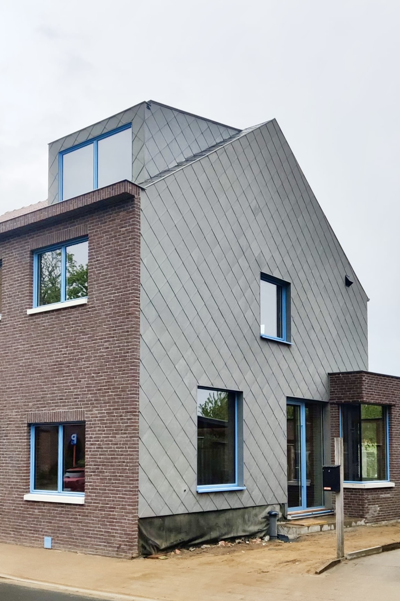
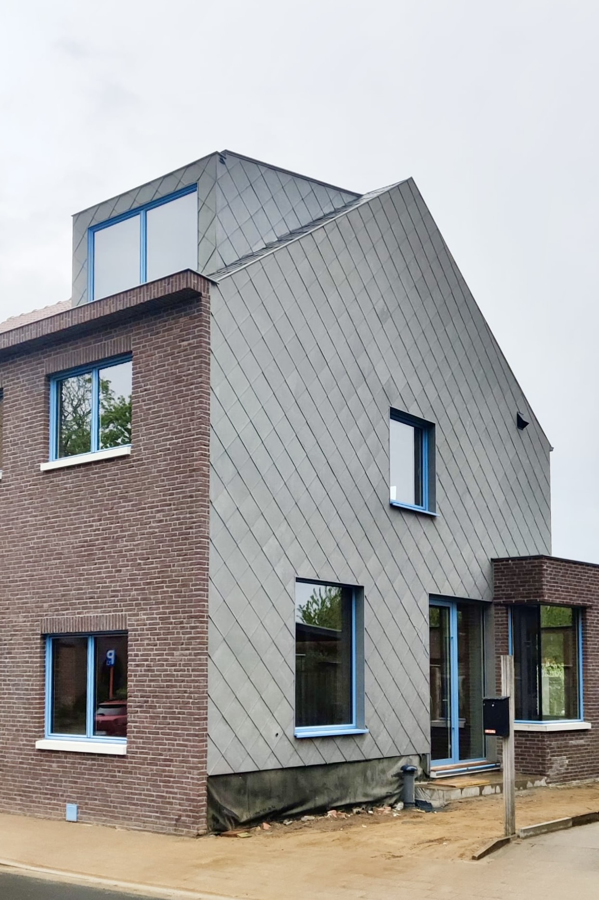
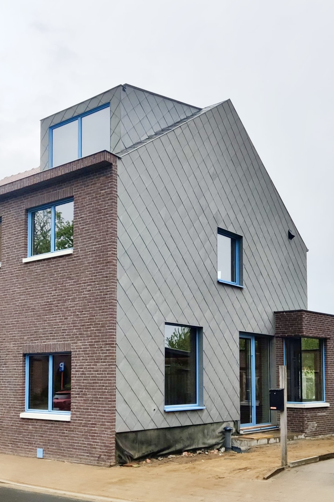

In samenwerkingn met DMOA Architecten.
Ella is de verbouwing van een halfopen woning in een landelijke buurt van Leuven, waar een jong koppel droomde van een toekomstig gezin met drie kinderen. Hun wens? Een warme, huiselijke plek met genoeg ademruimte voor iedereen. Daarom werd gekozen voor een nieuwe uitbouw met meerdere plekken om te chillen: een zitplek in de keuken, een bank in de inkomhal, en natuurlijk de klassieke living.
De ruimtes hangen als een enfilade aan elkaar, waardoor je subtiel de aanwezigheid van de anderen voelt, zonder altijd met elkaar in interactie te zijn. Door de slimme indeling en het creëren van geborgen hoeken, biedt het huis tegelijk rust en verbondenheid. Veel ruimte, op een compacte oppervlakte – mét toekomstpotentieel.
